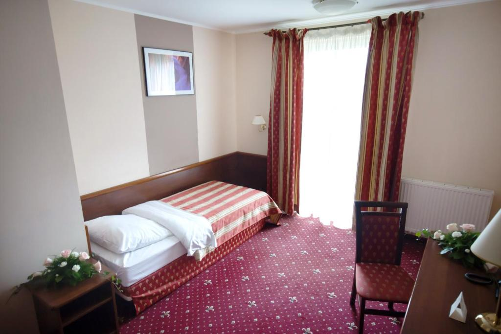
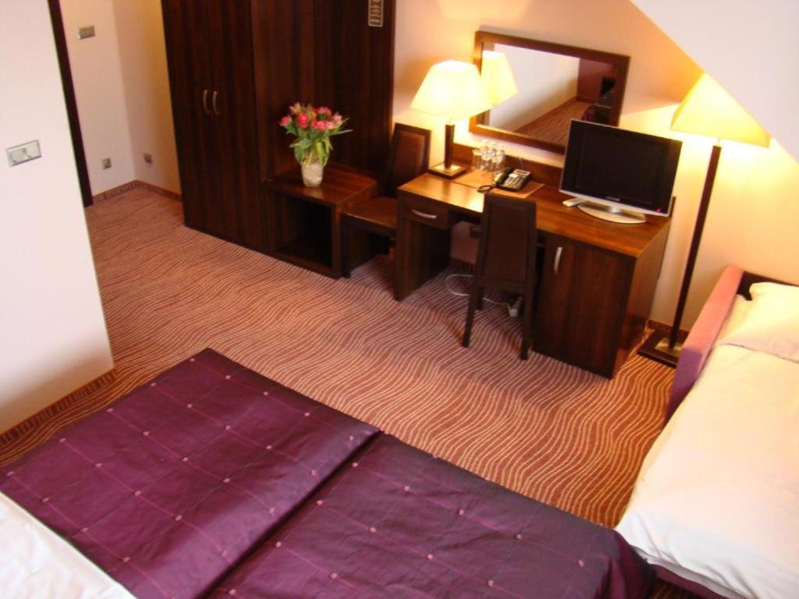
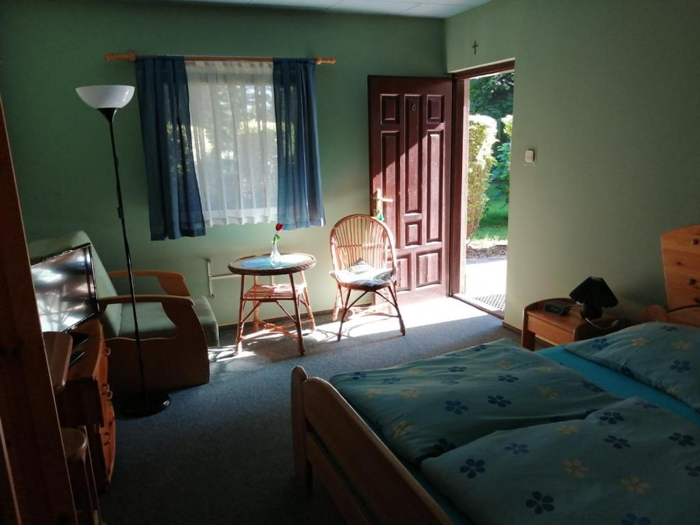
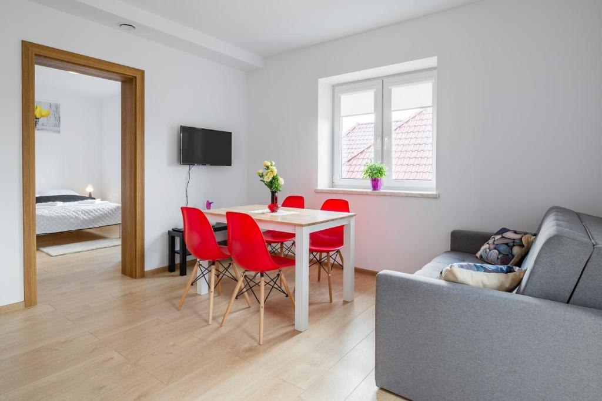

Hotel Novum & Spa
Hotel Novum położony jest 500 metrów od centrum Niepołomic i około 24 km od centrum Krakowa.
W hotelu znajduje się centrum odnowy biologicznej,
sale konferencyjne i restauracja. Goście mogą bezpłatnie korzystać z WiFi.
Przestronne pokoje wyposażone są w telewizor z dostępem do kanałów satelitarnych, czajnik bezprzewodowy, a także zestaw do parzenia kawy i herbaty.
Ponadto w studiach do dyspozycji Gości jest minibar i klimatyzacja.
Hotel zapewnia kącik dla dzieci, łóżeczka dziecięce oraz specjalne menu w restauracji. Goście mogą bezpłatnie korzystać z sauny.
Za dodatkową opłatą dostępne są rozmaite zabiegi, masaże i kąpiele. W hotelu mieści się przechowalnia rowerów.
Hotelowa restauracja oferuje dania kuchni regionalnej oraz śródziemnomorskiej. Codziennie rano serwowane jest śniadanie w formie bufetu.
W barze w holu podawane są rozmaite drinki i koktajle.
W hotelu Novum & Spa można korzystać z recepcji czynnej przez całą dobę, 7 dni w tygodniu i z bezpłatnego monitorowanego parkingu.
Parom bardzo się podoba ta lokalizacja – za pobyt dla 2 osób oceniają ją na 9,0.
Najpopularniejsze udogodnienia:
- bezpłatny parking
- spa i centrum odnowy biologicznej
- udogodnienia dla niepełnosprawnych
- pokoje rodzinne
- dobre śniadanie (Ocena 9.9 na postawie 30 opini)

Hotel Azalia & Spa
Trzygwiazdkowy obiekt Hotel Azalia & Spa położony jest w cichej, zielonej okolicy nieopodal miejscowości Niepołomice.
Oferuje on zakwaterowanie w pokojach z bezpłatnym WiFi. Do dyspozycji Gości jest zielony ogród. Odległość od pola golfowego wynosi 3 km.
Wszystkie pokoje w hotelu urządzone są w ciepłych kolorach i wyposażone w nowoczesne meble, telewizor z płaskim ekranem, wygodne łóżko oraz biurko.
Na miejscu dostępne jest bezpłatne WiFi. Każdy pokój dysponuje łazienką z prysznicem, bezpłatnym zestawem kosmetyków i suszarką do włosów.
Restauracja zaprasza na tradycyjne potrawy kuchni polskiej.
Przytulny bar jest idealnym miejscem na relaks przy drinku.
Goście mogą także odprężyć się w hotelowym spa, które oferuje między innymi sauny, wanny z hydromasażem oraz pokój relaksacyjny.
Na miejscu wykonywane są również masaże.
Parom bardzo się podoba ta lokalizacja – za pobyt dla 2 osób oceniają ją na 8,3.
Najpopularniejsze udogodnienia:
- bezpłatny parking
- spa i centrum odnowy biologicznej
- pokoje dla niepalących
- centrum fitness
- bardzo dobre śniadanie (Ocena 9.9 na postawie 30 opini)
- obsługa pokoju

Noclegi Pod Dębem u Jakuba
Obiekt Noclegi Pod Dębem u Jakuba, usytuowany w miejscowości Niepołomice, oferuje ogród, bezpłatny prywatny parking, wspólny salon oraz taras.
W motelu zapewniono bezpłatne WiFi. W okolicy znajdują się ciekawe miejsca takie jak: Kopalnia Soli w Bochni ( 19 km), Schindler Factory Museum ( 24 km).
Na miejscu zapewniono zespół animatorów oraz obsługę pokoju.
Na miejscu zapewniono zespół animatorów oraz obsługę pokoju. W każdym pokoju w obiekcie zapewniono prywatną łazienkę i pościel.
W obiekcie serwowane jest śniadanie kontynentalne.Okolica jest popularna wśród miłośników jazdy na rowerze.
W obiekcie działa wypożyczalnia samochodów.
Parom bardzo się podoba ta lokalizacja – za pobyt dla 2 osób oceniają ją na 8,6.
Najpopularniejsze udogodnienia:
- bezpłatny parking
- wyjątkowe śniadanie (Ocena 9.9 na postawie 30 opini)
- pokoje dla niepalących
- pokoje rodzinne
- obsługa pokoju

Willa Dębowa
W każdej opcji zakwaterowania znajduje się kuchnia z pełnym wyposażeniem, w tym lodówką, jak również część wypoczynkowa z rozkładaną sofą,
telewizor z płaskim ekranem pralka oraz prywatna łazienka z prysznicem i suszarką do włosów.
Wyposażenie obejmuje również piekarnik, zmywarkę, płytę kuchenną i czajnik. Obiekt Willa Dębowa oferuje wypożyczalnię rowerów.
Parom bardzo się podoba ta lokalizacja – za pobyt dla 2 osób oceniają ją na 9,4.
Najpopularniejsze udogodnienia:
- bezpłatny parking
- wyjątkowe śniadanie (Ocena 9.9 na postawie 30 opini)
- pokoje dla niepalących
- pokoje rodzinne
